Nolte — an N built on the grid. (2018)
Nolte is a product team founded by Jeffrey Nolte. The logo takes the first letter of the name and builds it inside a square grid — a mark that speaks about an organised, precise and grounded way of working.
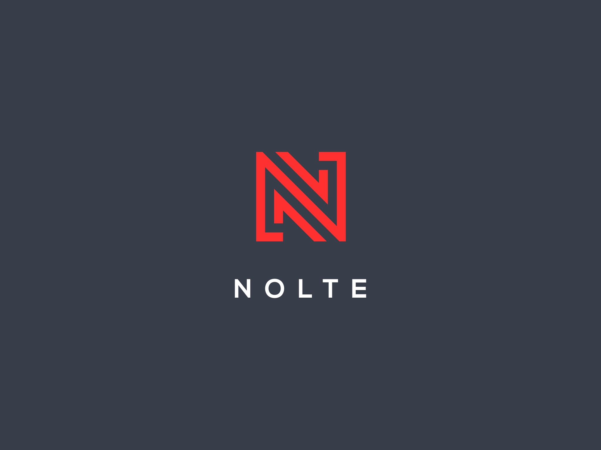
Concept
The basic shape is constructed inside a square format, placed on a grid. The system reflects how the Nolte team works: well organised, precise and grounded.
Following the grid, the “N” is drawn as the first letter of the brand. Its diagonal shapes suggest the dynamics and processes behind building each product, day after day.
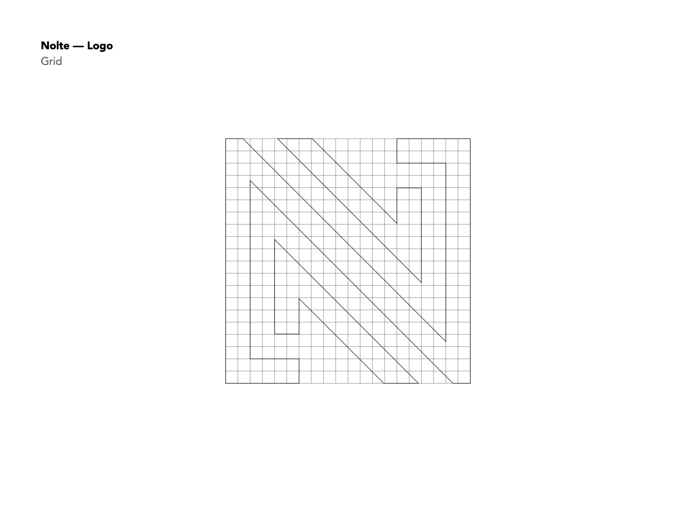
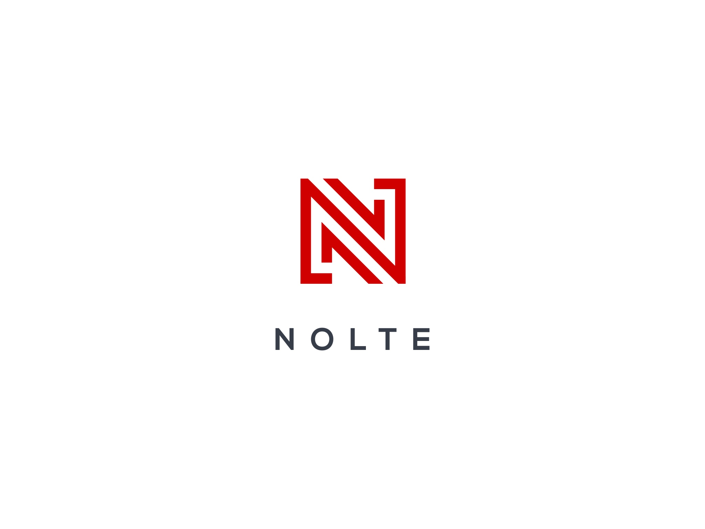
Animated logo
The mark comes to life in motion — built line by line from the grid, in positive and negative.
Logo versions
Vertical and horizontal compositions and a standalone mark, each in monochrome and colour, positive and negative, and on every brand colour.
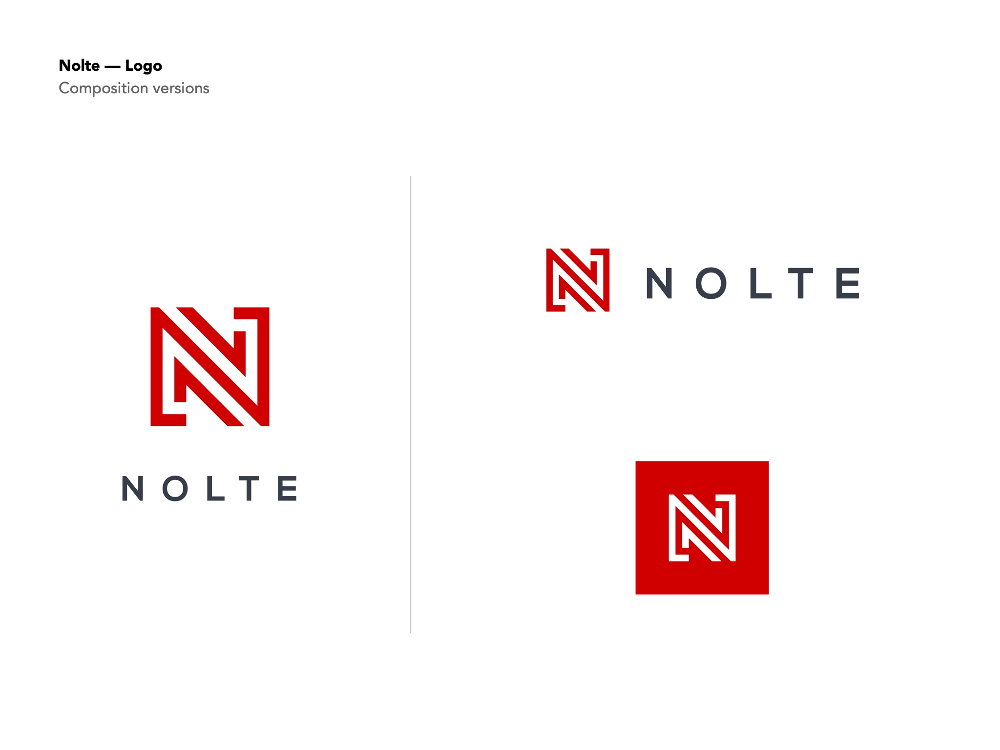
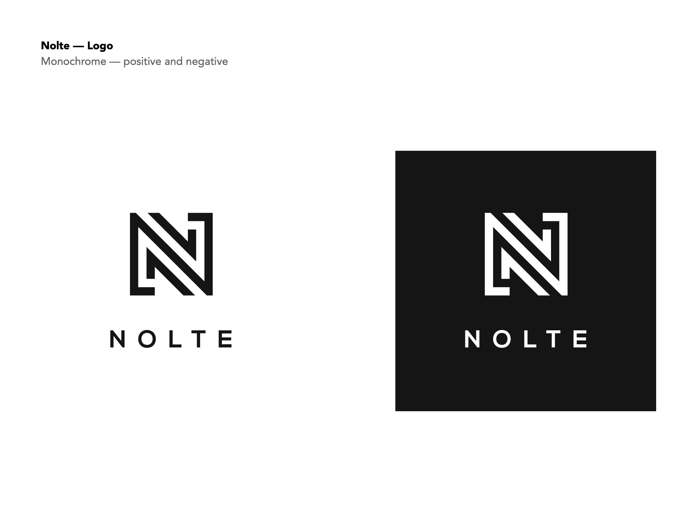
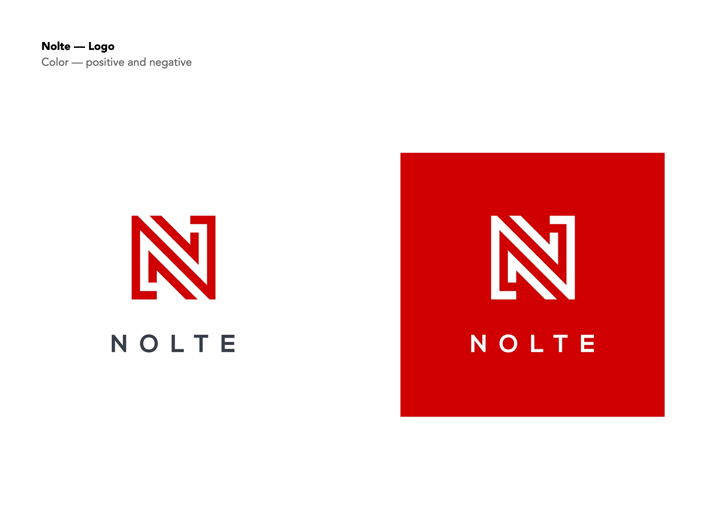
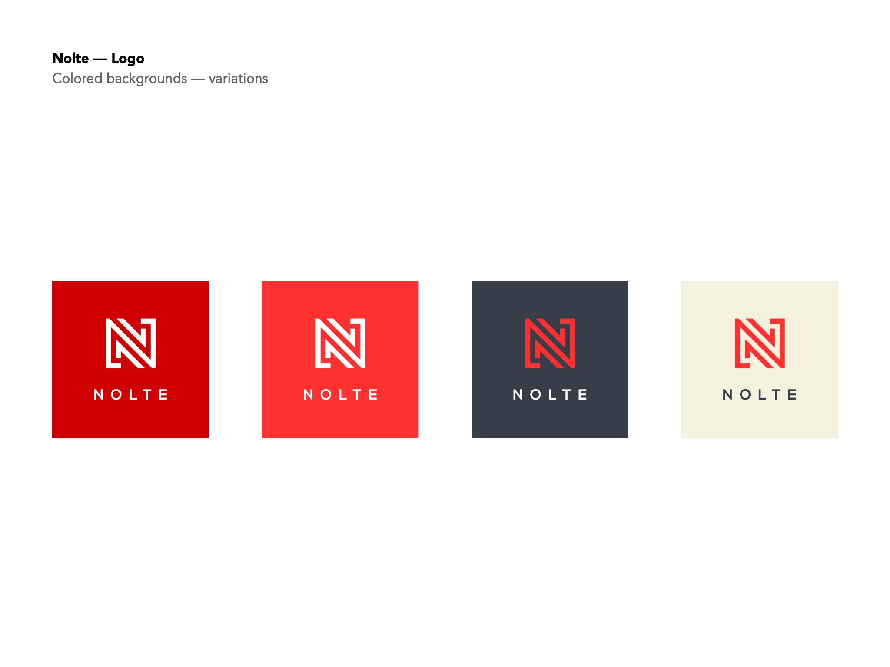
Safe space & sizes
A clear safe space around the logo, and tested sizes so it stays legible from large signage down to small icons.
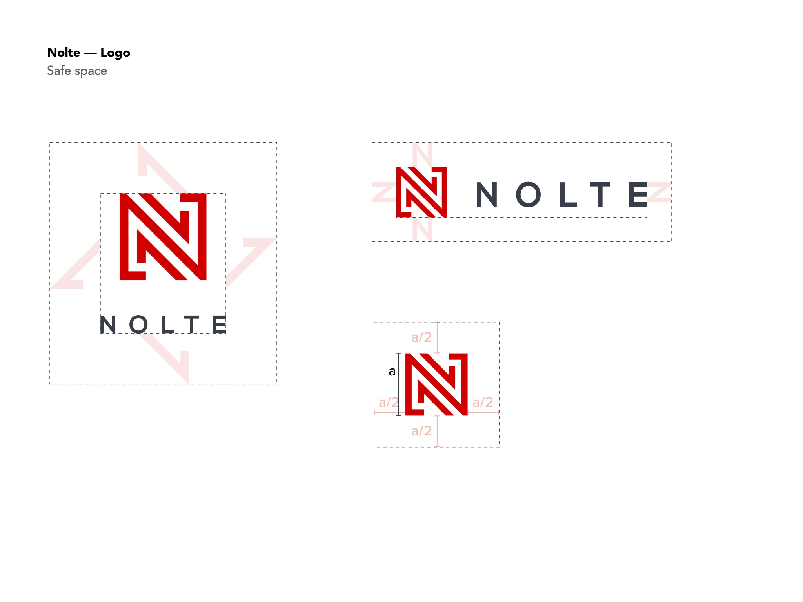
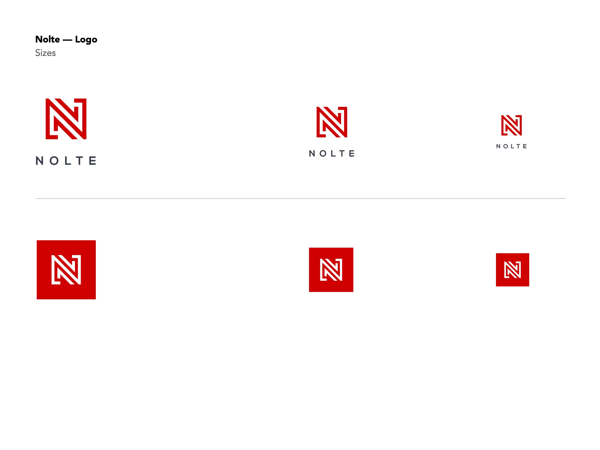
Colour & type
Crimson red carries energy, quality, ambition and determination, balanced by a deep slate and a warm cream. Nexa Bold, a simple geometric sans-serif, follows the clean shape of the mark.
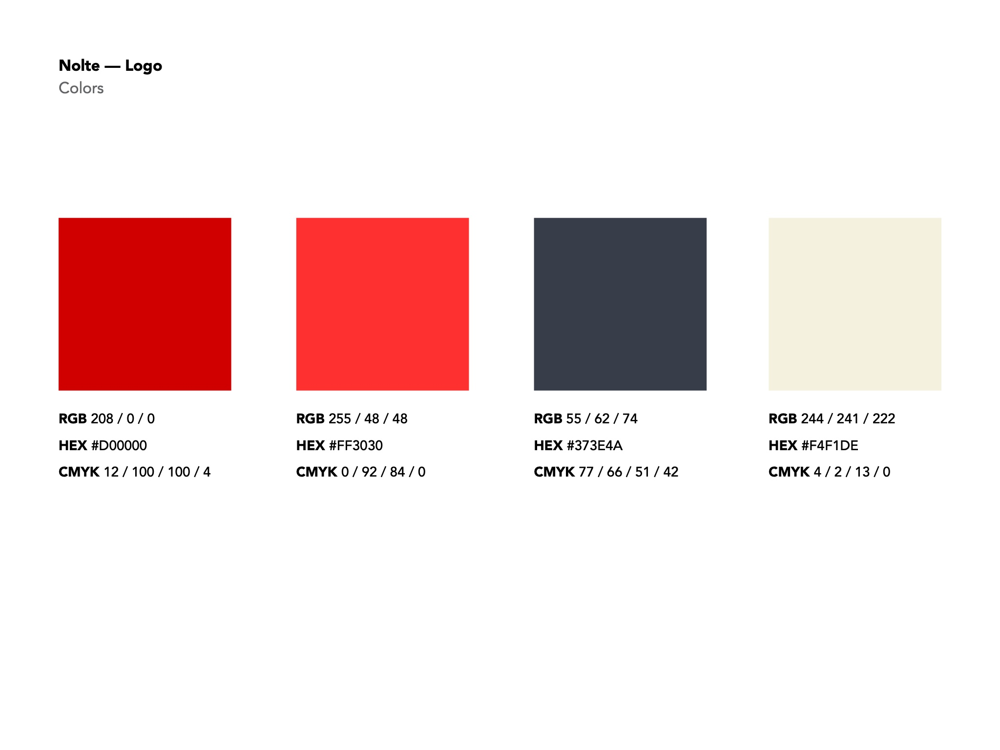
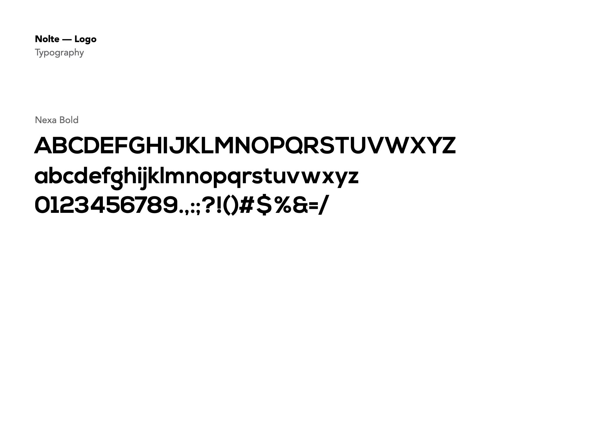
Graphic elements
Cropped and enlarged, the N becomes a pattern for backgrounds and brand materials.
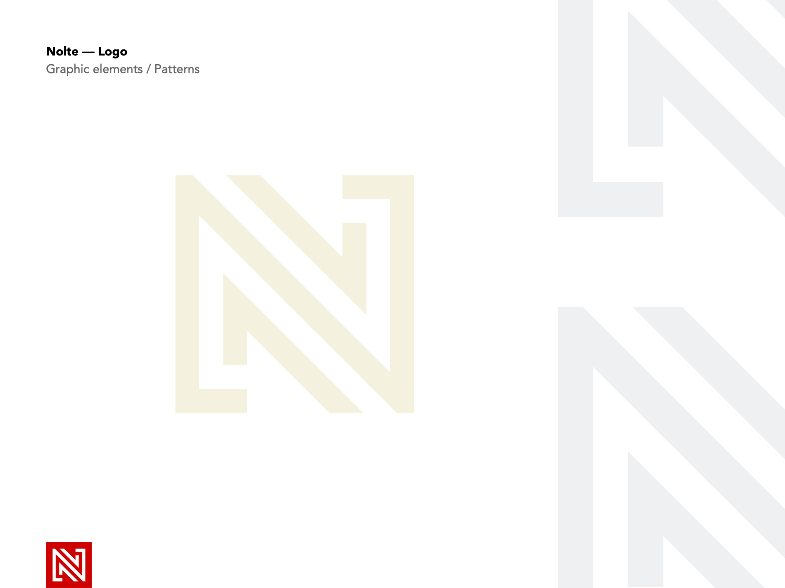